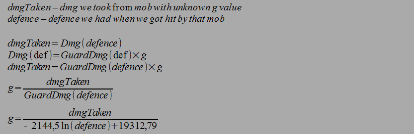
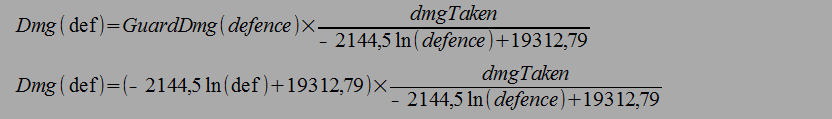
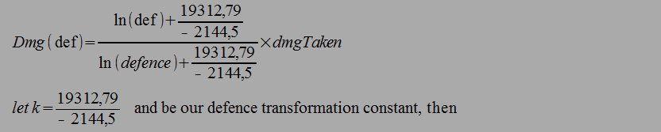

I assume that the damage calculation in this game is as follows:
- Every monster has constant base_dmg value set.
- To calculate the dmg player takes it goes through some function dmgFun(var1, var2, ...)
so that
takenDmg = base_dmg*dmgFun(var1, var2, ...).
- one of dmgFun() variables is defence and its multiplicative, that is
dmgFun(def, base_dmg, var1, ...) = defFun(def) * dmgFun_noDef(base_dmg, var1,...)
Knowing that we can now try to figure out what that defFun(def) is. So I've chosen arbitrary mob - Guardian of Light and mapped the dmgTaken from mob to the defence I had during the hit.
We can graph it like so:
As we can see, its not linear function.
Fortunataly it's not a problem, because we can aproximate it using ln(x) as shown on the graph.
Now thats not the end of it. This function only calculates dmg you take from Guardian of Light. Lets call this function GuardDmg(def). So
so now general function:
We don't know eaither of the values to calculate g, but what we can see is that no matter what def we pick it is constant. So every mob has its own g values for each of its attack. The Guardian of Light has g = 1; mob that hits 3 times harder will have g = 3 and so on. So all we need to calculate dmg of certain mob's attack is to get hit by it once and use info about the dmg we took and defence we had.
and now using this g value:
we can simplyfy:

Which is the final formula, where:
Dmg(def) - function that says what dmg will you take from certain attack depending on your defence
dmgTaken, defence - damage you took from the attack you are intrested in and the defence value you had at that moment.
k - defence transformation constant